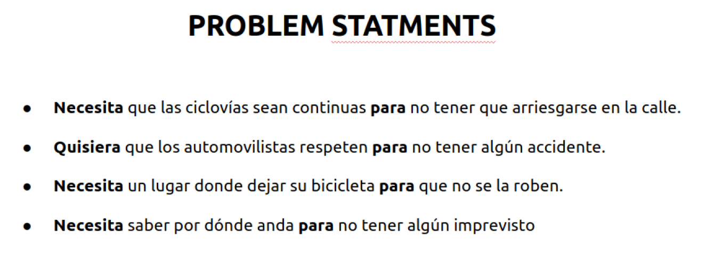
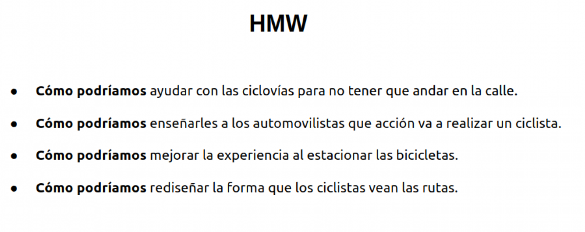
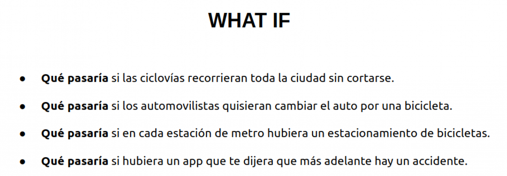

On Bike

OBJETIVO
El objetivo es crear una aplicación móvil dirigida a los ciclistas, con toda la información que necesitan y funciones que les ayuden con los diferentes problemas que diariamente sufren.
OBSERVACIONES
Investigue cuáles eran los puntos con mayor presencia de ciclistas en Santiago, y salí a recopilar información relevante. Después de recorrer las calles, me dí cuenta que unos de los principales problemas era la infraestructura de algunas ciclovías, estas eran muy angostas, sin letreros que les indicaran a los automovilistas que por ahí cruza una ciclovía, estas estaban en lugares altamente peligrosos, etc. Otra cosa que pude ver es que las personas que transitan, lo hacen sobre las ciclovías, vi autos estacionados sobre ellas, paraderos de buses que para acceder a ellos tenían que pasar sobre las ciclovías, etc, así, un sin fin de problemas. Le pregunté a algunos ciclistas que circulaban por el sector, que pensaban sobre todo esto, de todo lo que había visto, y la gran mayoría apuntó a la falta de educación vial que hay en las personas y de los mismos ciclistas que no se respetan entre ellos. Muchos han tenido accidentes por aproximación con autos y con personas, por lo que ponen en riesgo su vida y la de los demás.
BENCHMARK
Investigue y compare otras aplicaciones que usan habitualmente los ciclistas, de ahí pude sacar lo que realmente era útil y lo que no.

GUIA DE ENTREVISTA
En esta ocación realicé entrevistas telefónicas a personas que viajaban todos los días en bicicleta. Fueron entrevistas previamente agendadas guardando los audios (con previa autorización).

También se realizó una encuesta vía web, donde los resultados arrojaron practicamente el mismo resultado.

USER PERSONA


MAPA DE EMPATIA
Para saber que experimenta el usuario, cuales son sus necesidades, realicé el mapa de empatía, que estudia las variables básicas:
- lo que ve
- lo que dice o hace
- lo que escucha
- lo que piensa o siente
Una vez definida la información, se hace un análisis con otras dos variables:
- esfuerzo
- resultado

PROBLEM SOLVING
  PROPUESTA DE VALOR
Para poder sacar la propuesta de valor, nos planteamos las preguntas principales e hipotesis de una posible solución. Y así poder empezar con un producto.
Como propuesta de valor tenemos:
- Generar alerta para sentirse seguro.
- Llegar a su destino sin problemas.
- Tener seguimiento de rutas.
- Tener una opción en caso de peligro.
ESTRUCTURA DEL CONTENIDO

DEFINICION
Ya que tenemos una estructura, se comienza con la ideación y realización de los primeros bocetos de la aplicación móvil.

TESTEO FINAL
En este paso le dije a los usuarios que empezaran su dia como habitualmente lo hacen, que usaran la aplicación para planificar su viaje. Al principio tuve varios feedbacks de parte de ellos, como por ejemplo no tenia un boton que agregara las rutas favoritas, o el home era muy confuso, la estructura no se entendía muy bien, por lo que tuve que modificar la aplicación.
Encontraron que la aplicación es super útil, ya que tomó justo el problema que a ellos tanto los acompleja, que son los accidentes por aproximación.
Nos dio paso para crear el MVP.


PROTOTIPO
CONCLUSIÓN
Me gusto mucho este trabajo, por que me dio la oportunidad de conocer más a las personas, sus problemas y sus motivaciones. Siento que cada dia, con estos nuevos desafíos, puedo pulir mas mis habilidades, cometiendo errores se aprende, y siento que he aprendido mucho, y me gusta.
PARA VER EL TRABAJO COMPLETO HAZ CLICK ACA